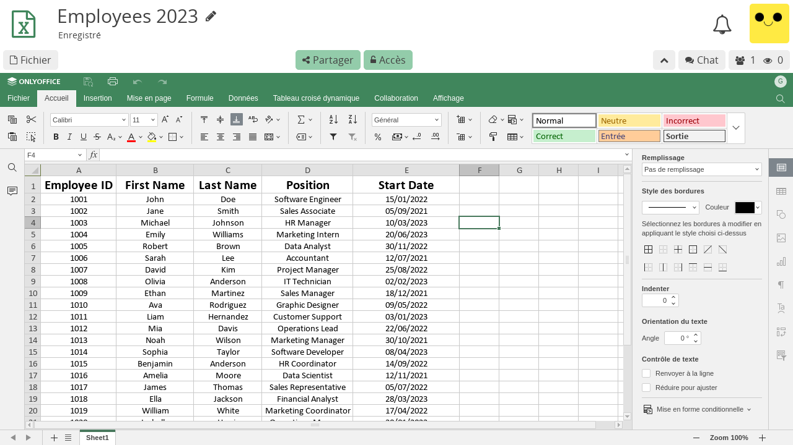

Tableur¶
L'application Tableur est une intégration d'OnlyOffice. Pour en savoir plus sur les détails de cette intégration, voir Quelle est la relation entre CryptPad et OnlyOffice ?.
Documentation¶
Les fonctionnalités spécifiques du tableur sont documentées dans le manuel OnlyOffice.
Barres d'outils¶
CryptPad intègre les feuilles de calcul OnlyOffice dans le même système de collaboration chiffrée que les autres applications. En complément, OnlyOffice offre un large éventail de fonctions dans une barre d'outils à onglets. Il en résulte une double barre d'outils qui peut prêter à confusion :
La barre d'outils CryptPad, en haut, est utilisée pour les opérations de Fichier (y compris l'import/export, l'historique, les propriétés, etc.) ainsi que pour le Partage et Accès.
La barre d'outils OnlyOffice est utilisée pour toutes les fonctionnalités du tableur lui-même, ainsi que pour les modes de collaboration expliqués dans la section suivante.
Annulation et modes de collaboration¶

OnlyOffice propose deux modes d'édition collaborative dans les feuilles de calcul qui déterminent la façon dont les changements sont synchronisés entre les utilisateurs et si la fonctionnalité Annuler est disponible ou non.
Le mode rapide est activé par défaut. Les nouvelles modifications effectuées par tous les utilisateurs sont automatiquement synchronisées avec les autres au fur et à mesure. Il est impossible d'annuler quand ce mode est activé.
Le mode strict permet à chaque utilisateur d'effectuer des modifications de manière indépendante. Les cellules modifiées sont "verrouillées" pour les autres jusqu'à ce que l'auteur enregistre manuellement ses modifications. Les nouvelles modifications ne sont synchronisées avec les autres utilisateurs qu'après avoir été sauvegardées. Dans ce mode, il est possible d'annuler les modifications qui n'ont pas encore été sauvegardées. Lorsqu'un utilisateur enregistre ses modifications, les autres sont invités à les enregistrer afin de recevoir les dernières modifications.
Lorsque vous appuyez sur "Ctrl Z" pour annuler, l'application vous suggère automatiquement de passer en mode strict pour activer la fonction d'annulation.
Pour revenir au mode rapide, utilisez l'onglet Collaboration dans la barre d'outils OnlyOffice et sélectionnez Mode d'édition > Rapide.
Note
CryptPad mémorise votre choix de mode d'édition sur chaque appareil pour tous les documents.
Historique¶
Pour accéder à l'historique de la feuille de calcul, utilisez Fichier > Historique dans la barre d'outils CryptPad.
En raison de l'intégration de OnlyOffice avec la collaboration chiffrée en temps réel de CryptPad, l'historique du tableur fonctionne différemment que dans les autres applications.
La barre d'outils de l'historique du tableur¶
L'historique du tableur permet uniquement de revenir à la version précédente, et de naviguer ensuite entre les modifications suivantes.
version précédente
modification suivante
version suivante
La fonctionnalité permettant de restaurer et de partager une version, ainsi que tout ce qui concerne les Captures, fonctionne de la même manière que dans les autres applications.
Impression¶
Pour imprimer une feuille de calcul, il est recommandé d'exporter en utilisant un des formats ci-dessous et de gérer la mise en page avec une application de bureau telle que LibreOffice Calc.
Il est également possible d'utiliser un export ".pdf" pour produire un fichier à imprimer, les résultats peuvent varier en fonction de la mise en page du document.
Import/Export¶
.bin exportés par l'application. Fichiers Excel .xlsx..bin, Excel .xlsx, .ods, .csv, .pdf.